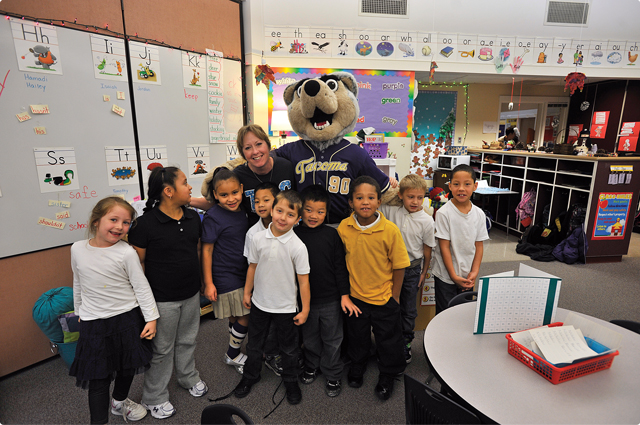

Our Mission:
Sustainable change in schools and communities so every child is a whole child—engaged, successful, resilient, and ready for life.

Spring PBIS Training Institute — April 27, 2015
This one-day event is designed to introduce your school to Check and Connect and provide your school with the readiness steps needed to prepare for implementation. Check and Connect is a model of sustained intervention for promoting students’ engagement at school.

A Whole Child Raises a Village
As part of the Tacoma Whole Child Initiative, Mount Tahoma High School students explain how a student-led mentoring program changed their perspective on school and themselves. The mentor program promotes an inclusive school environment where every student feels they belong and are part of something larger than themselves—how they live the Mount Tahoma HS T-BIRD way to succeed in school and in life! Watch the Video

Pathways to Promise
Tacoma Whole Child Initiative, is the pathway to the promise of assured admission to UW Tacoma for graduating seniors. This is an amazing program and a huge access to higher education barrier.
Learn More
Watch the video

We Day
Tacoma is transforming! See how the TWCI opens opportunities for youth and builds self-determination for every student, every day. Learn how We Day Tacoma speakers and performers encourage youth to make a difference. Video features ex-NFL player Jon Kitna, musician Vicci Martinez, Tacoma Mayor Marilyn Strickland, and others. Watch the Video